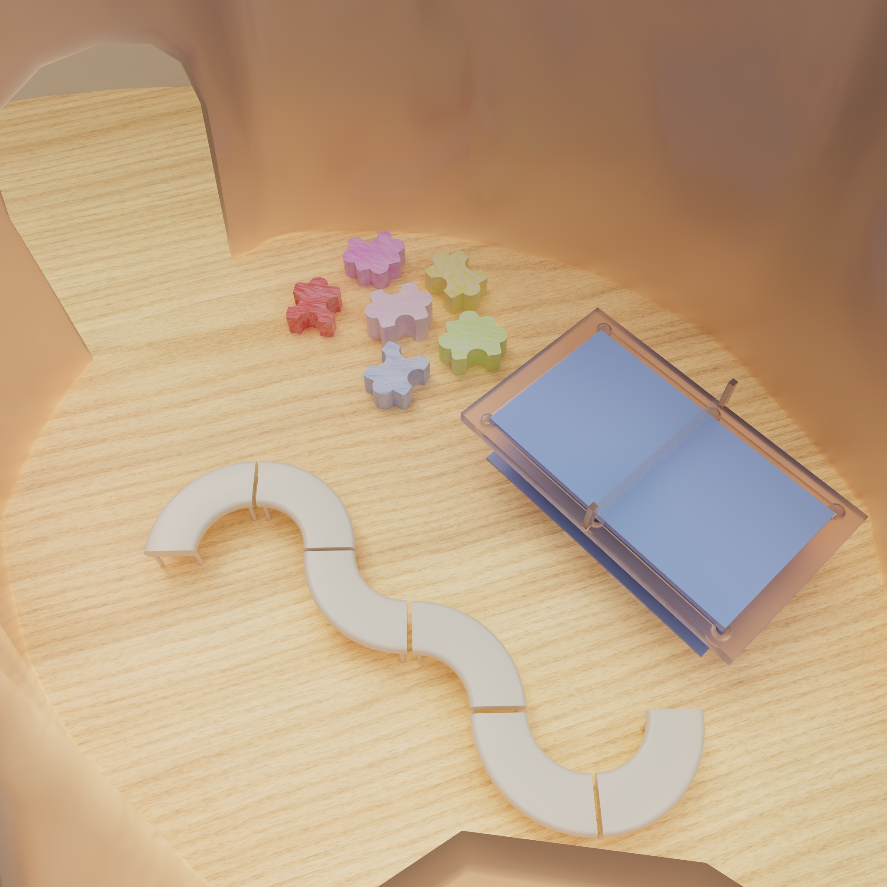
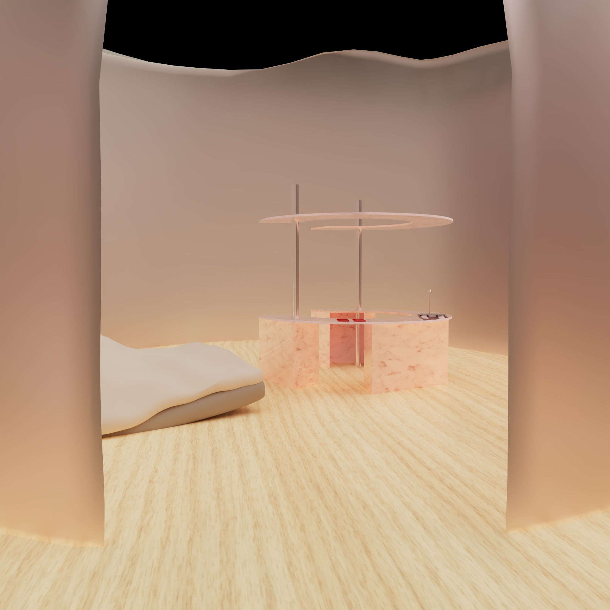
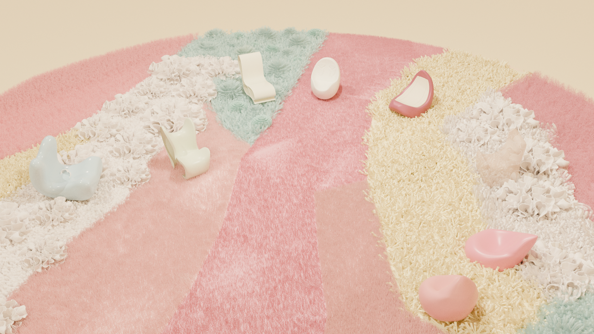
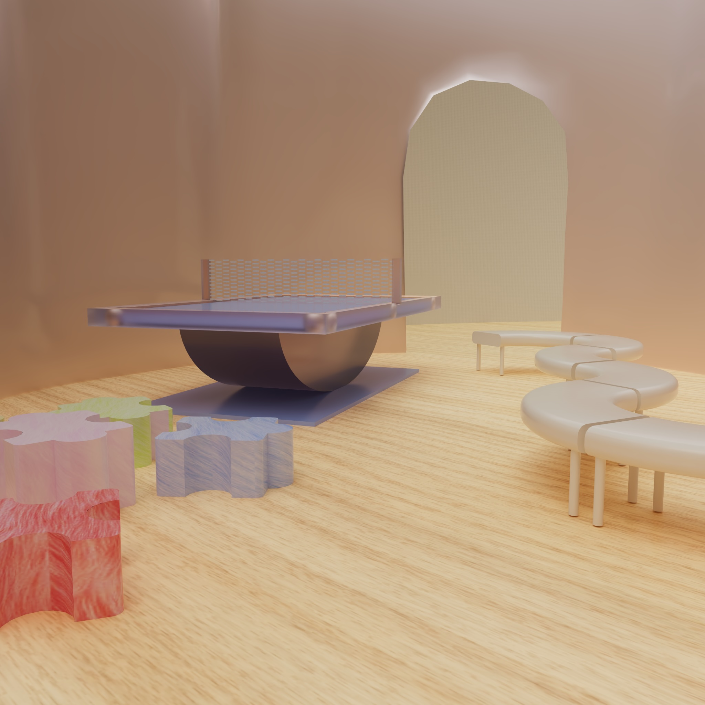
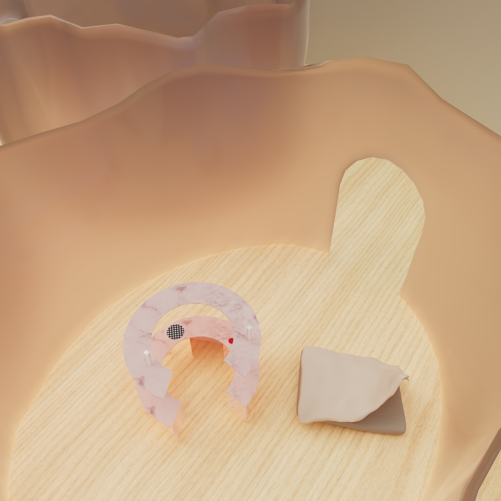
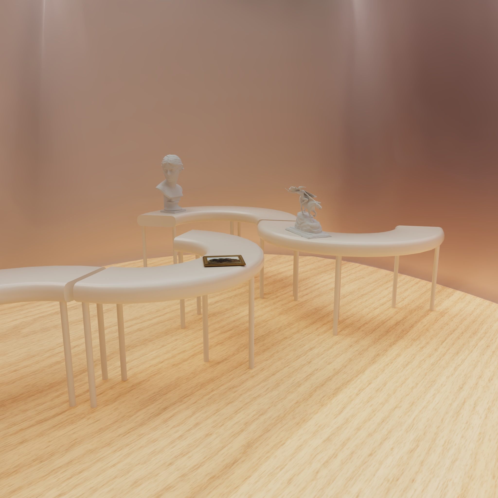

Design begins with the body, memory and relationships. This page gathers her recent work around
belonging, comfort, space and narrative: furniture you can sit with, rooms you can enter, and
publication experiments that hold a group's voices together.
The Comfort Lab, 2025. A body-led comfort space with tactile carpets, yoga-inspired seats and soft
sensory cues.
01 / Category
Publication Design
This section draws from the magazine project inside The Comfort Lab PDF. It explores everyday
objects, hidden narratives and non-linear storytelling, treating the magazine as a vessel for
different voices.
Magazine / Group work
Carry On
Shanyin worked with the layout team, contributing visual research and page compositions. The
project uses Ursula K. Le Guin's "carrier bag" metaphor to connect objects, rooms, small
gestures and side narratives into one publication.
02 / Category
Exhibition Design & Poster
Exhibition here is not only display. It places people inside spatial relationships: a
cross-cultural community space for international students, and a multi-sensory lab for bodily
comfort.
Spatial proposal / 2025
Together We Belong
Responding to the "Where people meet" brief, this project proposes a sustainable and
movable exchange space for international students, immigrants and local communities in
London. Circular outer walls, transparent connections, modular furniture and writable
walls create a gentle sense of belonging.
Since only a few works have become fully implemented brand systems, this section treats brand
as project identity: clear names, tone, material cues and memorable visual anchors.
2025 / IdentityTogether We Belong
A spatial identity centred on belonging, cross-cultural exchange and shared activities.
2025 / IdentityThe Comfort Lab
Softness, touch, body awareness and care shape the tone of the project.
2025 / PosterBelonging Poster
A poster direction developed with Ange Zhang, later reconsidered because the tone did not fit.
2025 / WebCargo/Spline Site
3D models embedded into Cargo3, allowing spatial objects to be clicked and rotated.
2024 / Visual researchMaterial Boards
Visual systems extracted from textiles, yoga poses, exhibition visits and furniture experiments.
04 / Category
Experiments & Fun
This section keeps the playful parts visible: puzzle chairs, yoga-pose seats, tactile carpets,
a ping-pong table and workshops. They are not side notes to the final renderings; they are how
she understands bodies and relationships.

Puzzle chairs can be combined or separated, creating different distances for student interaction.

Low furniture, soft lighting and wooden flooring work together for accessibility and comfort.

Flex Seat extracts bodily curves from yoga poses, encouraging stretching and pause.Sense Seat, tactile materials and audio visualisation form a multi-sensory comfort experiment.
05 / Category
Multimedia
Her projects often move across media: Blender modelling, Spline interaction, Cargo3 websites,
audio visualisation, projected space and PDF publications. Media is not decoration here; it
helps the audience get closer to the bodily feeling of the work.
Interactive space / 2025
The Comfort Lab
A multi-sensory comfort space for sedentary lifestyles, physical pain and mental fatigue.
The project includes Flex Seat, Sense Seat, a bio-tactile carpet, ASMR sound and audio
visualisation across four walls, helping the body regain a sense of being cared for.
RoleArt
direction, 3D visualisation, sensory researchMethodsBlender, Photoshop, physical computing research
06 / Detail pages
Project Details
Each project keeps clear credits, context and continuous image sequences. Scroll down for a
detail-page style narrative closer to the original PDFs.
A space for international students and immigrants to build cultural resonance: people can cook
together, play cultural games, join language exchanges, show work, and use the walls as notice
boards and message surfaces. Its real purpose is not simply to look beautiful, but to make
people feel less alone.



Behind the scene
The project moved from triangular structures toward an elliptical space to reduce distance and increase enclosure.Puzzle chairs, the ping-pong table and curved seating help interaction emerge naturally.Lighting, fabrics and low furniture were adjusted toward the feeling of a warmer public living room.
This project begins with her own spinal discomfort and yoga practice, asking how furniture and
space can guide the body to slow down. A seat becomes more than a support structure; it becomes
a gentle reminder of posture, touch, breath and emotion.
Behind the scene
Furniture forms were found through body postures, yoga images and soft materials.The tactile carpet, sensor seating and sound visualisation gradually became an enterable lab.The final visuals keep softness without becoming childish, emphasising the feeling of being gently held.